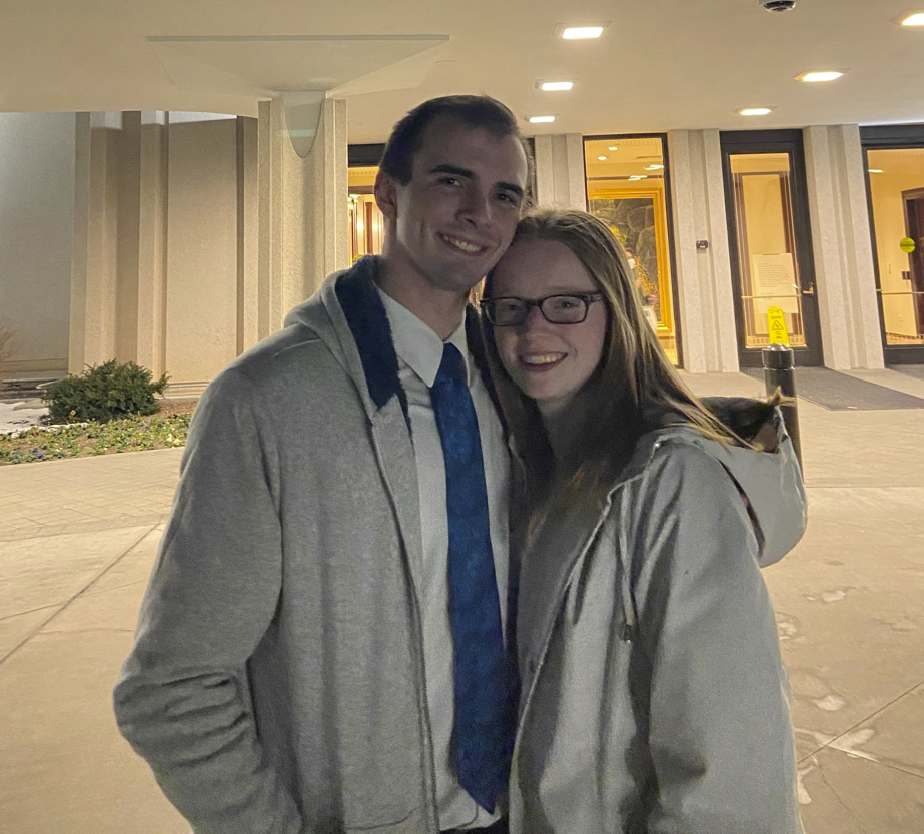

About Me

Trent Mauchley
I am working towards a bachelors degree in programming and web design. I love to game and spend time with my wife. As you can see from that last statement I am married, but I do not have any kids.
I am working in the infrastructure side of the networking field. I help to install devices that help store, move and transfer any data that is used.
I see that the more you learn and gain skills the more valuable you are in the working field. I plan on increasing my understanding of web development to be able to apply it when the time comes to use it.
I have been a member of the Church of Jesus Christ of Latter Day Saints all my life, but wasn't really converted until I was a teenager. I love Alma 29:9 I know that which the Lord hath commanded me, and I glory in it. I do anot bglory of myself, but I glory in that which the Lord hath commanded me; yea, and this is my glory, that perhaps I may be an instrument in the hands of God to bring some soul to repentance; and this is my joy.
It really is a blessing to be apart of this program and I am looking forward to the time that I spend in this class.